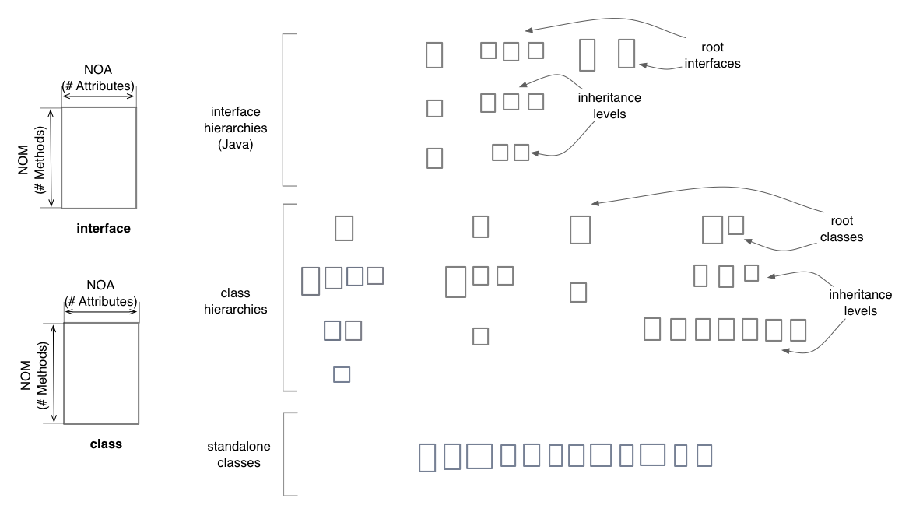
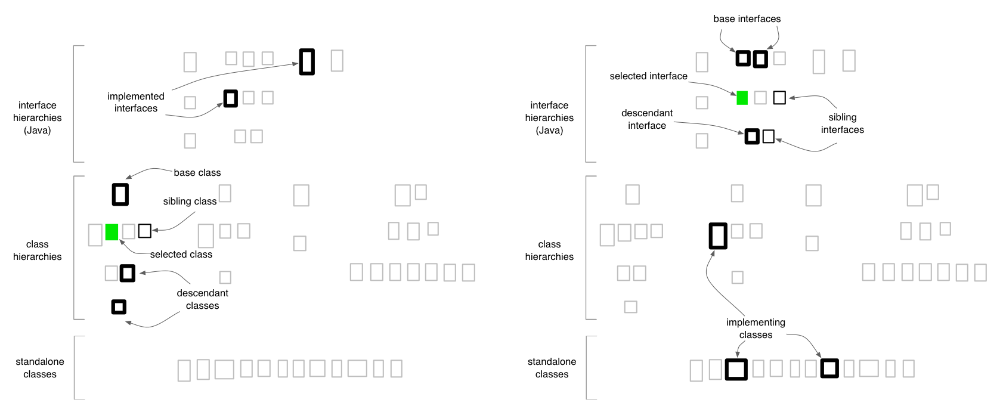

Inheritance Map
The Inheritance Map gives an overview of the inheritance hierarchies
define in the system, meaning that this map is only available for
systems that contain object-oriented code (i.e. not pure C projects).
Inheritance Maps can be generated for the entire system or for a
specific class, in which case only the class itself, its class
hierarchy and the hierarchies of its implemented interfaces, as well as
the hierarchies of its collaborators.
Entities and Layout
The Inheritance Map shows all the classes and interfaces defined in the
system as white rectangles. As in the case of the Package
Map,
the horizontal and vertical sizes of the rectangles are proportional to
the number of attributes and methods respectively. The Inheritance Map
is divided into three layers (from top to bottom):
- the interfaces layer - containing all the interfaces defined in
the system
- the class hierarchies layer - containing all the classes defined
in the system, which belong to a class hierarchy
- the standalone classes layer - containing classes defined in the
system, which are not part of a class hierarchy. A class that only
implements interfaces but does not extend another class is considered
standalone.
The relative vertical placement of interfaces in the upper layer
reflects the depth of each inheritance hierarchy and the level at which
an interface is located inside its hierarchy. The same applies for the
middle layer, containing class hierarchies.

Entity selection
When selecting a class or an interface in the Inheritance Map, the
entity itself is colored in green (with no borders). Its ancestors and
descendants are shown with a thickened black border and its siblings
are shown with a normal black border. This selection feature is very
useful in order to understand the relation between a class / interface
and its corresponding hierarchy.

Quality perspectives
Complexity, Coupling,
Design Flaws, Encapsulation,
Inheritance
Metrics used
DIT (indirectly), NOA,
NOM